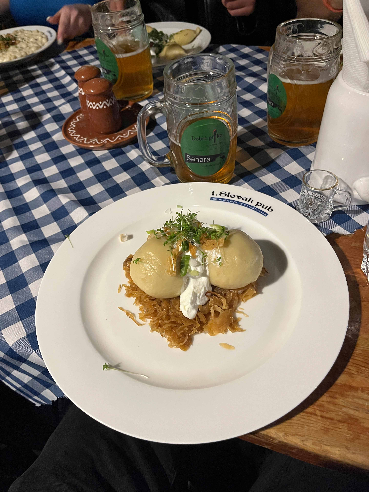
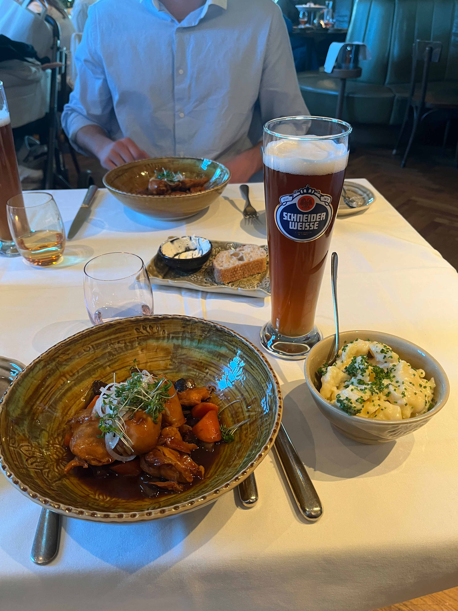
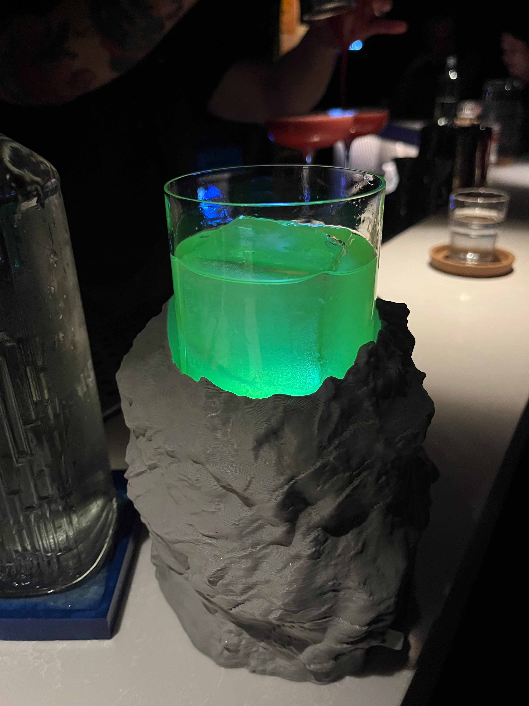

April 30, 2025
This weekend we traveled to Bratislava and Vienna! We had heard that Vienna was expensive, so we decided to stay in Bratislava Friday and Saturday nights but do a day trip to Vienna because it’s only an hour and a half away. It may have been cheaper, but staying in Vienna at least one, if not both nights would have been much more enjoyable. There’s just so much more to do, especially for nightlife, and taking the bus to and from Vienna was kinda annoying. We decided that we were glad to check Bratislava off the travel list, but that it was a one-and-done destination.
Bratislava Friday
We took the Můj Vlak train to Bratislava from Prague and arrived at 2 pm. It was a nice change of pace to take a train instead of a bus. Technically, we had assigned seats, but we wanted a table to play cards together, so we would pitch up in a spot and then move when someone kicked us out. Bratislava felt like a ghost town. Maybe it was the rainy weather, but there was hardly anyone outside, which felt strange compared to the other cities we visited. We checked into our hostel for the weekend, Patio Hostel. It was nice to have private dorm rooms, but the hostel was pretty lacking; the bathrooms were still shared with the rest of the floor, and it felt like we were the only ones under the age of 40. Maybe Bratislava doesn’t get a lot of young tourists, or maybe we just messed up and picked a hostel that caters to older travelers. But it was cheap and we didn’t have to spend much time there, so I can’t complain.


UFO Tower
The UFO Tower was our first stop in Bratislava. It was $11 to go up to the observation deck, which felt a bit overpriced, but the view was fantastic. The wind was blowing strongly, but at least it stopped raining. We had a full 360 panorama of Bratislava and the surrounding area. Bratislava looked like it had three distinct areas. An older area which looked more similar to the area around Prague Castle, the downtown with skyscrapers, and the residential area with dozens of copy-paste Soviet-style apartment buildings. It was strange to see skyscrapers after not having any in Prague or Budapest, considering how culturally similar they are. There were a lot of small river cruise ships. I think a cruise down the Danube from Vienna to Budapest, passing through Bratislava and small towns, would be interesting. I liked how much green there was on the west side of the river, and northwest of the city, there were over a hundred wind turbines. The UFO tower is apparently part of the World Federation of Great Towers, joining the Space Needle, Eiffel Tower, Burj Khalifa, Sears Tower, and many more, although it didn’t really feel as worthy of the honor.


Bratislava Castle
Our second stop of the day was the Bratislava Castle. On the way, we stopped at St. Martin’s Cathedral, which was very large but not as ornate as a lot of the other Cathedrals I’ve visited. It feels blasphemous to say, but I think I prefer Bratislava Castle to Prague Castle, although if I’m including the Cathedral in the center of Prague Castle, then it probably gets the edge. The Castle also had a nice view of the city. We walked around the outside a bit, but the inner courtyard was closed, so we decided to leave and come back on Sunday.

Dinner
For dinner, we went to the Slovak Pub, which came highly recommended online. I ordered the potato pierogi, which was fine but not exceptional. They didn’t have the 1L beers like we had been told, and the service wasn’t great, so overall we weren’t too impressed. Maybe we went on a bad night.

Vienna Saturday
We took the RegioJet bus to Vienna at 7:30 am this morning. We beelined for breakfast first. All of the cafes that were recommended to us had huge lines, but we ended up at a place called Stadtcafe, and I got a delicious breakfast sandwich. First stops after that were St Peter’s Cathedral and the Sisi Museum. The architecture of Vienna is amazing! Behind the Museum was a huge open area with a lot of museums. There were some people playing spikeball, so of course Peter and I asked to join for a game. They had cleats and Spikeball jerseys, and we got destroyed, but it was a blast. I love how Vienna has public water filling locations scattered around the city; more places in Europe need to do this!


St Stephen’s
St. Stephen’s is definitely the flagship of Vienna. I loved the Gothic architecture style, with so much intricate detail. The interior was huge with lots of amazing stone carvings. We wanted to go up into one of the towers, but the admission fee was cash only, and not everyone had enough.


Belvedere
I loved the Belevdere Palace! Really beautiful gardens to walk through and enjoy. The view across the reservoir to the Palace was amazing. Unfortunately, the museum was sold out of tickets for the day so I’ll have to come back another time.

Hundertwasser House
I don’t think I’ve ever seen anything quite like the Hundertwasser House. The architectural style felt a bit like a post-apocalyptic apartment complex. I’m curious if anyone actually lives in the apartments or if it’s mainly just a tourist attraction. There was a large gift shop building too, I was so tempted to get one of the matted paintings, but $50 was a bit more than I wanted to spend.


Dinner
For whatever reason, we decided to trust Tristan with finding a place for dinner. He made a reservation for Chez Bernard, which was quite a bit fancier than we were used to. The restaurant was on the 7th floor of a nice hotel. The meal was $45 a person for a main dish and a beer. The food was very good, but I was definitely not ready to be paying so much for it. The restaurant also added a $5 per person place setting charge, which apparently is common for upscale Austrian restaurants, but I had never seen that before.

Fitzcarraldo Speakeasy
After dinner, we headed to a speakeasy that Tristan was obsessed with finding. To get in, we had to press a button on a vending machine, and the speakeasy was hidden behind it. The place was very small and dim, but the atmosphere was perfect. All the tables were reserved, but they had space for us to stand at the bar, which turned out to be much more fun because we could watch the bartenders make the fancy drinks. Rafe and I ordered the Elyx Gimlet, which came on top of a rock holder with a light underneath. The drink started bright purple, but then the bartender poured in something that turned the whole drink neon green. Peter and Violette ordered a drink that came with a foot-tall tower of bubbles that they had to eat before getting to the actual drink. Paying $18 after spending so much on dinner was not great, but for the experience, it was worth it.



Bratislava Sunday

Blue Church
The Blue Church did indeed live up to its name; the whole exterior was baby blue, and the interior had a lot of blue accents as well. There was an Easter service happening, so we could only peek inside.


Medieval Market
We made it back to Bratislava Castle for the medieval market. Unfortunately, I didn’t take any pictures, but the market was great. There were like 15 stalls with people dressed in medieval attire selling handmade pottery, wooden bowls, knives, necklaces, and many other things. They also had a few food stands which I didn’t try but looks pretty good.
Prague Easter
Markets
We had the day off from school for Easter Monday, so we headed into the city to go to the Easter Markets. The markets had been up for a couple of weeks, but this was my first time going. We visited the markets in Old Town Square and Wenceslas Square. They sold very similar stuff, lots of kielbasa, shish kebabs, jewelry, and hot wine, but it was great to hang out on such a beautiful day. I did find a stand selling small drawings of popular Prague landmarks, I purchased one of Old Town Square that I really liked.

Whipping Tradition
One of the most unique and interesting Easter traditions in Czechia is the whipping tradition. On Easter Monday, Czech boys collect willow branches and braid them together to create a whip. They decorate the whip with ribbons and then whip girls. The whipping is supposed to bring the girls good luck and fertility. Predecorated whips were being sold at all of the Easter Markets and even on campus. From what I saw, the tradition isn’t really done anymore in Prague; the selling of whips is more just honoring the history of the tradition at this point.